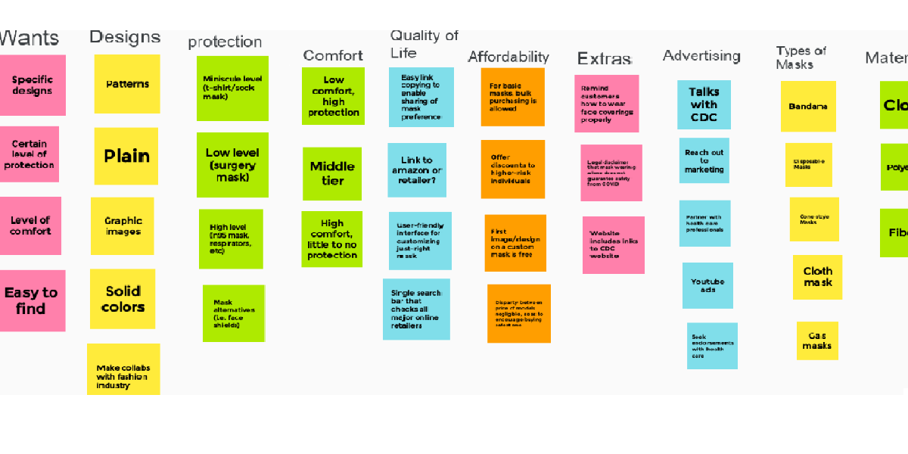

Problem Statement PDF

Our user base consists of a wide variety of consumers, each with specific preferences about face coverings. With such a vast array of options on the market, one can easily get confused with whichever variety works best for them. Our goal is to help users find a comfortable and effective mask.
Affinity Diagram PDF
This is a diagram we thought of containing all the necessary aspects to consider with regards to selling and purchasing face coverings.
Personas PDF
A collection of various potential consumers of ours, and how their own personal characteristics and interests play into their preferences for a face covering.
Storyboard PDF

Examples of how the personas above came to use our software.
Sketches PDF
A collection of sketches as to how our app's user interface could look on a smartphone.
Paper Prototype Video
A short paper demo of how our app's user interface works.
Usability Testing PDF
A collection of sketches as to how our app's user interface could look on a smartphone.